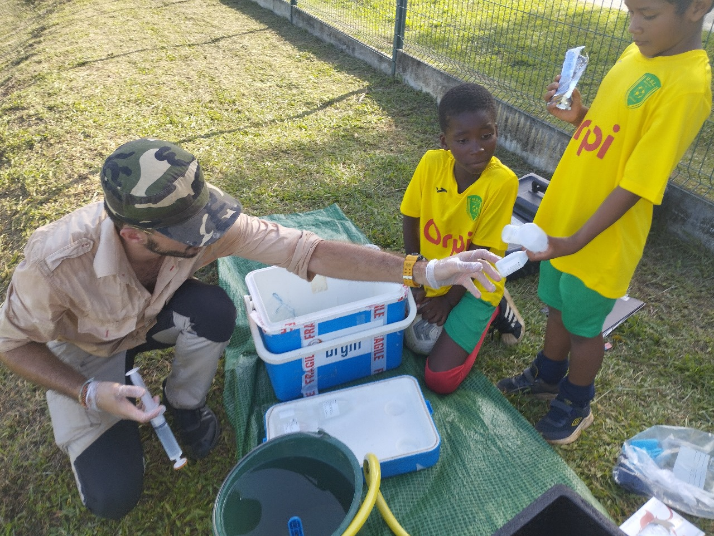

Ingénieur hydrogéologue avec une expérience dans la gestion de projets en environnement, hydrogéologie et hydrogéochimie. Passionné par l'eau, la nature et le développement durable, je suis à la recherche de défis professionnels qui me permettent de contribuer positivement à la gestion des ressources en eau.

Photo de profil